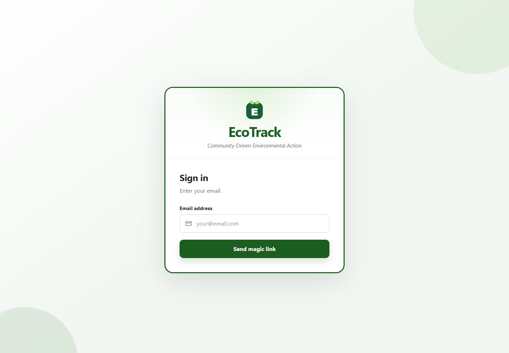
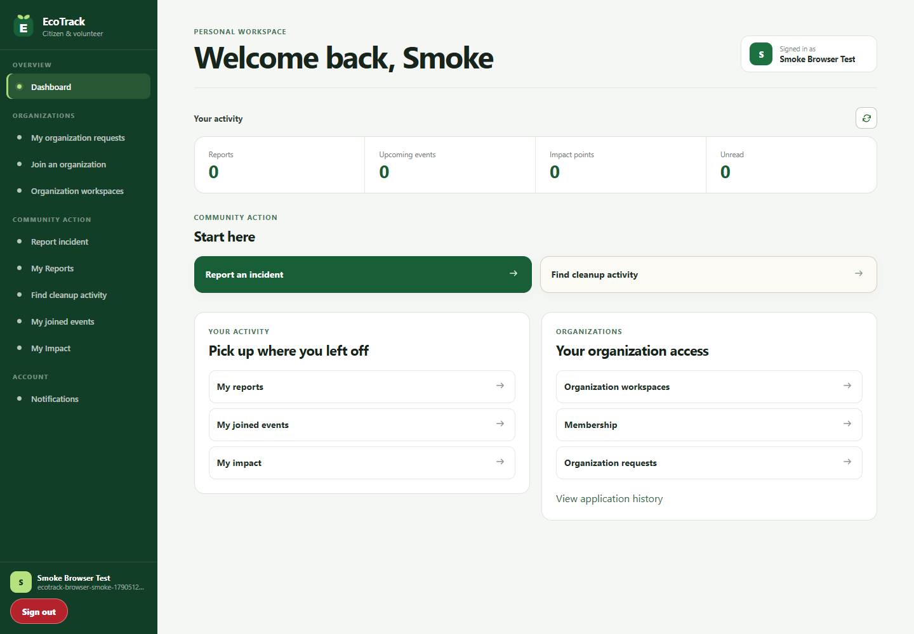
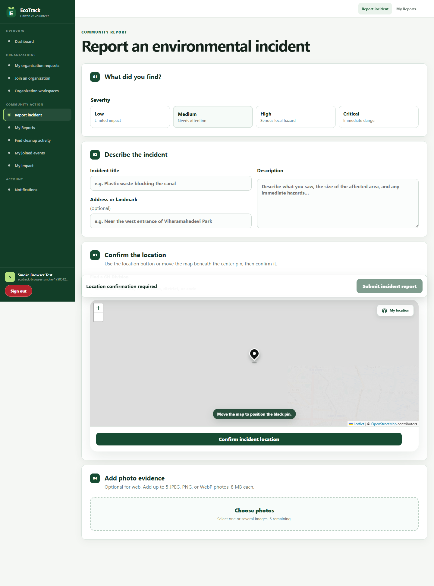
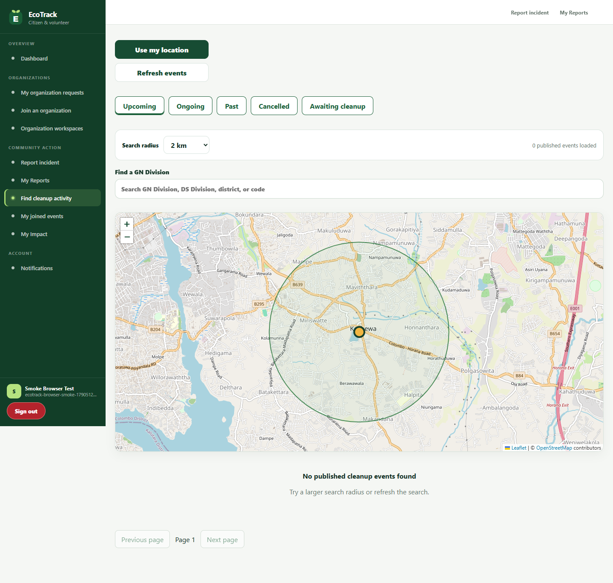
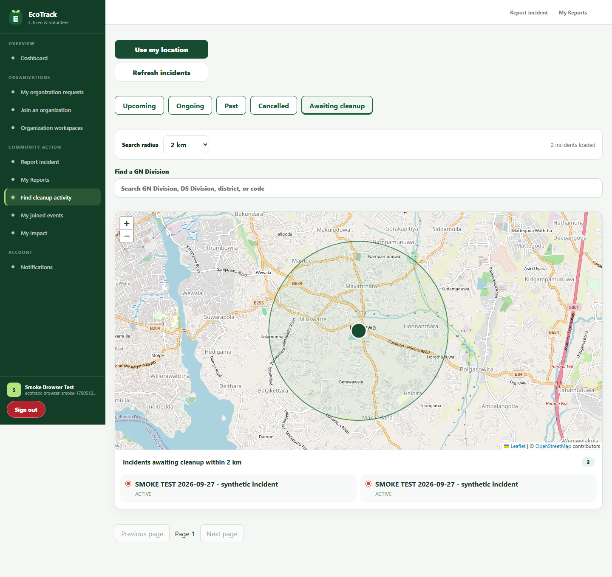
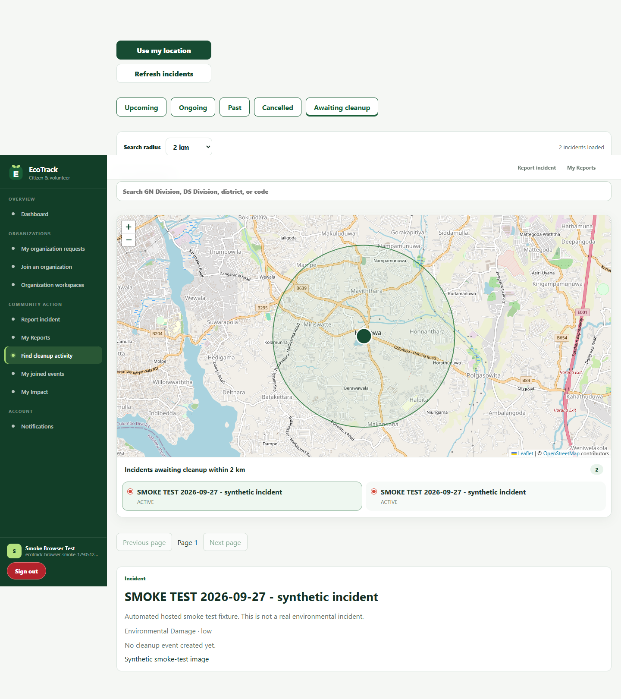
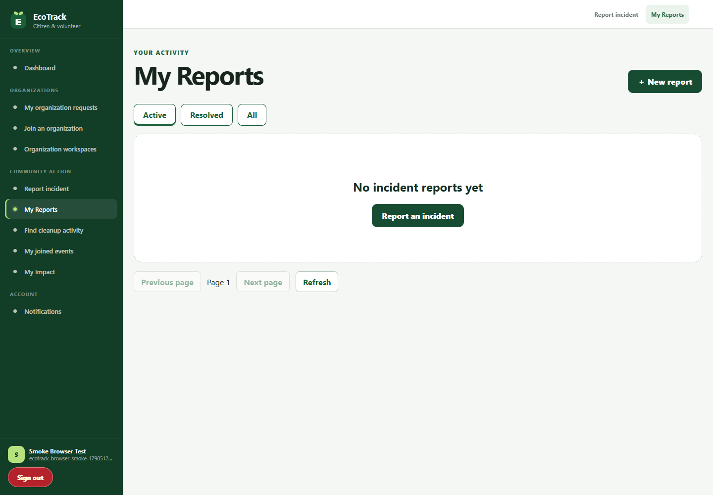
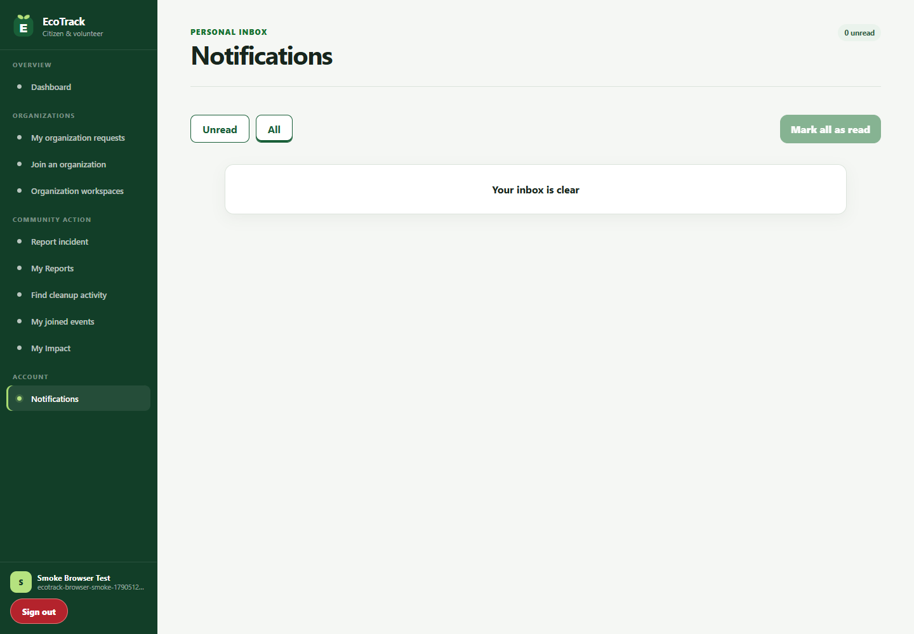

Hosted login page; email delivery not tested
browser/verified/WEB01-login.png

Initial HTTP 500 retained; later API retest passed. Physical Android checks remain pending. Read README and defects before using this evidence in the report.
Evidence guide | Results table | Defects and gaps | Remaining screenshots
browser/verified/WEB01-login.png

browser/verified/WEB02-dashboard.png

browser/verified/WEB03.png

browser/verified/WEB04.png

browser/verified/WEB04-awaiting.png

browser/verified/WEB04-incident-detail.png

browser/verified/WEB05.png

browser/verified/WEB06-inbox-reviewed.png
